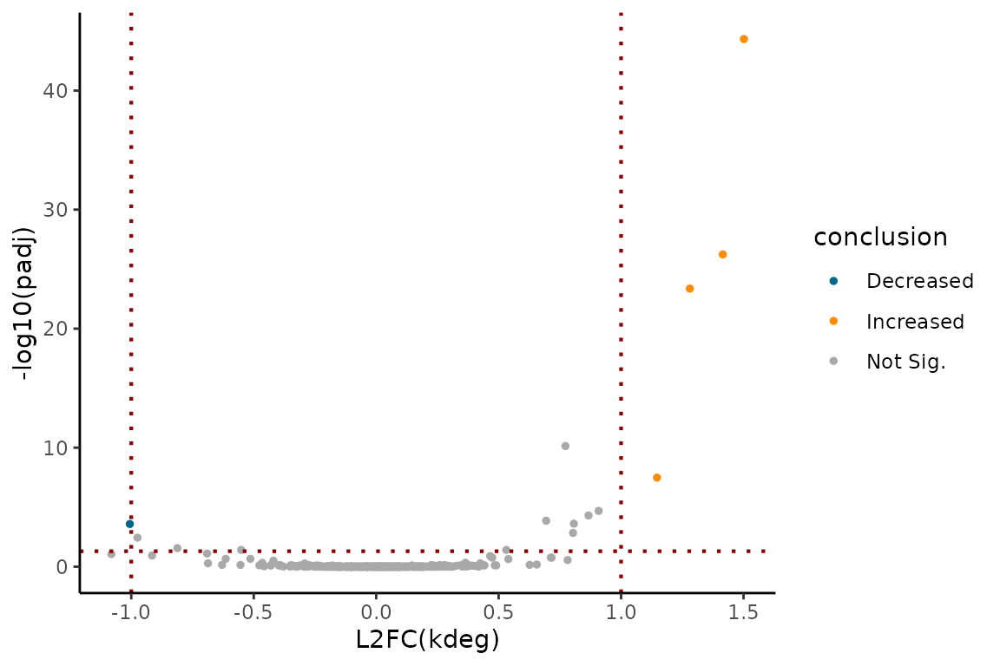

Linear modeling in EZbakR
Linear-modeling.RmdIntroduction
Typically, you will have multiple replicates of NR-seq data from two or more “conditions”. In this case, it is common to want to compare kinetic parameter estimates across the various conditions. In addition, sometimes you will need to account for complex experimental designs and potential batch effects. This is the task of generalized linear modeling, and in this vignette, we will see how to perform this kind of modeling in EZbakR. EZbakR significantly improves upon its predecessor, bakR, by allowing users to specify any identifiable design matrix, thus supporting a wider arrange of comparative analyses than was possible in bakR.
Example scenarios
In this section, I will blaze through some common examples. I will
eventually write later sections to get into some of the details of
linear regression in case you need to more deeply understand how to
generalize beyond what I show in this section. In all cases, the
specification of the linear model that you would like to fit will be
done through the formula_mean argument of EZbakR’s
AverageAndRegularize() function.
The simplest case: a single “condition” factor
Often, the difference between samples can be described with a single factor. For example, you may have performed NR-seq in wild-type (WT) cells, and a variety of knock-out (KO) cell lines. In this, case, there will likely be a single experimental detail factor in your metadf:
| sample | tl | genotype |
|---|---|---|
| sampleA | 0 | WT |
| sampleB | 2 | WT |
| sampleC | 2 | WT |
| sampleD | 0 | KO |
| sampleE | 2 | KO |
| sampleF | 2 | KO |
Here, I simulate and then fit the relevant model for both the log(kdeg)’s as well as the log(ksyn)’s:
metadf <- tibble(sample = c("sampleA", "sampleB", "sampleC",
"sampleD", "sampleE", "sampleF"),
tl = c(0, 2, 2,
0, 2, 2),
genotype = c("WT", "WT", "WT",
"KO", "KO", "KO"))
# Simulate kdeg and ksyn differences
set.seed(43)
simdata <- EZSimulate(500,
metadf = metadf %>% dplyr::rename(label_time = tl),
mean_formula = ~genotype -1,
pdiff_ks = 0.1)
ezbdo <- EZbakRData(simdata$cB,
metadf)
ezbdo <- EstimateFractions(ezbdo)
#> Estimating mutation rates
#> Summarizing data for feature(s) of interest
#> Averaging out the nucleotide counts for improved efficiency
#> Estimating fractions
#> Processing output
ezbdo <- EstimateKinetics(ezbdo)
### Linear modeling in EZbakR:
# Estimate average log(kdeg) for each genotype
ezbdo <- AverageAndRegularize(ezbdo,
formula_mean = ~ genotype)
#> Fitting linear model
#> Estimating coverage vs. variance trend
#> Regularizing variance estimates
# Estimate average log(ksyn) for each genotype
ezbdo <- AverageAndRegularize(ezbdo,
parameter = "log_ksyn",
formula_mean = ~ genotype)
#> Fitting linear model
#> Estimating coverage vs. variance trend
#> Regularizing variance estimates
# Calculate difference in log(kdeg) between the two genotypes
ezbdo <- CompareParameters(ezbdo,
parameter = "log_kdeg",
design_factor = "genotype",
reference = "WT",
experimental = "KO")
# Calculate differe in log(ksyn) between the two genotypes
ezbdo <- CompareParameters(ezbdo,
parameter = "log_ksyn",
design_factor = "genotype",
reference = "WT",
experimental = "KO")Everything is default EZbakR stuff discussed in other vignettes until
we get to AverageAndRegularize(). There, I am using the
formula_mean parameter to describe how I want to relate the
parameter being averaged to factors in the metadf.
~ genotype means that I want to calculate average values of
the parameter for each value of genotype that appears in
the metadf.
CompareParameters() in this case can be used to get
comparisons of the parameter averages in the two genotypes.
design_factor describes the multi-leveled factor you
included in your formula_mean that you would like to
compare two levels of. The difference in parameters is calculated as
experimental - reference. In this case, these
differences will represent log-fold differences in the kdegs and ksyns
(since a difference in logs is a log of a ratio; log(b) - log(a) =
log(b/a)). If you have more than two conditions in your data, nothing
changes in how you would run AverageAndRegularize(), but
you would need to run CompareParameters() for each
comparison you want to make.
You can visualize the comparative analysis results using MA plots or volcano plots like so:
# Assess log(kdeg) differences
EZVolcanoPlot(ezbdo,
parameter = "log_kdeg")
EZMAPlot(ezbdo,
parameter = "log_kdeg")
# Assess log(ksyn) differences
EZVolcanoPlot(ezbdo,
parameter = "log_ksyn")
EZMAPlot(ezbdo,
parameter = "log_ksyn")
Dealing with multiple factors: simple interaction model
What if there is more than one variable you tweak from replicate to replicate? Maybe you have multiple cell lines with distinct genotypes, but you also treat these cell lines with a drug in some cases? Your metadf may look like:
| sample | tl | genotype | treatment |
|---|---|---|---|
| sampleA | 0 | WT | nodrug |
| sampleB | 2 | WT | nodrug |
| sampleC | 2 | WT | nodrug |
| sampleD | 0 | WT | drug |
| sampleE | 2 | WT | drug |
| sampleF | 2 | WT | drug |
| sampleG | 0 | KO | nodrug |
| sampleH | 2 | KO | nodrug |
| sampleI | 2 | KO | nodrug |
| sampleJ | 0 | KO | drug |
| sampleK | 2 | KO | drug |
| sampleL | 2 | KO | drug |
The simplest thing to do in this case is to estimate average
parameter values for each unique combination of your two (or more)
factors. This can be done with a simple formula_mean of
~ genotype:treatment:
metadf <- tibble(
sample = c("sampleA", "sampleB", "sampleC",
"sampleD", "sampleE", "sampleF",
"sampleG", "sampleH", "sampleI",
"sampleJ", "sampleK", "sampleL"),
tl = c(0, 2, 2,
0, 2, 2,
0, 2, 2,
0, 2, 2),
genotype = c("WT", "WT", "WT",
"WT", "WT", "WT",
"KO", "KO", "KO",
"KO", "KO", "KO"),
treatment = c("nodrug", "nodrug", "nodrug",
"drug", "drug", "drug",
"nodrug", "nodrug", "nodrug",
"drug", "drug", "drug")
)
# Simulate kdeg and ksyn differences
set.seed(43)
simdata <- EZSimulate(500,
metadf = metadf %>% dplyr::rename(label_time = tl),
mean_formula = ~genotype:treatment -1,
pdiff_ks = 0.1)
ezbdo <- EZbakRData(simdata$cB,
metadf)
ezbdo <- EstimateFractions(ezbdo)
#> Estimating mutation rates
#> Summarizing data for feature(s) of interest
#> Averaging out the nucleotide counts for improved efficiency
#> Estimating fractions
#> Processing output
ezbdo <- EstimateKinetics(ezbdo)
### Linear modeling in EZbakR:
# Estimate average log(kdeg) for each genotype
ezbdo <- AverageAndRegularize(ezbdo,
formula_mean = ~ genotype:treatment)
#> Fitting linear model
#> Estimating coverage vs. variance trend
#> Regularizing variance estimates
# Estimate average log(ksyn) for each genotype
ezbdo <- AverageAndRegularize(ezbdo,
parameter = "log_ksyn",
formula_mean = ~ genotype:treatment)
#> Fitting linear model
#> Estimating coverage vs. variance trend
#> Regularizing variance estimates
# Calculate difference in log(kdeg) between WT drug and no drug
ezbdo <- CompareParameters(ezbdo,
parameter = "log_kdeg",
design_factor = "",
reference = "genotypeWT:treatmentnodrug",
experimental = "genotypeWT:treatmentdrug")
# Calculate difference in log(kdeg) between KO drug and no drug
ezbdo <- CompareParameters(ezbdo,
parameter = "log_kdeg",
design_factor = "",
reference = "genotypeKO:treatmentnodrug",
experimental = "genotypeKO:treatmentdrug")
# Calculate difference in log(kdeg) between KO and WT nodrug
ezbdo <- CompareParameters(ezbdo,
parameter = "log_kdeg",
design_factor = "",
reference = "genotypeWT:treatmentnodrug",
experimental = "genotypeKO:treatmentnodrug")
### You could do same for log_ksynThe quirk in this case is how to use CompareParameters.
You have to set design_factor to a blank string, and then
list the full parameter names in reference and
experimental. You can see the parameter names by looking at
the metadata for the relevant AverageAndRegularize
object:
ezbdo$metadata$averages$logkdeg_feature$fit_params
#> [1] "genotypeKO:treatmentdrug" "genotypeKO:treatmentnodrug"
#> [3] "genotypeWT:treatmentdrug" "genotypeWT:treatmentnodrug"It’s a bit of a hack, and I hope to have a more intuitive option for this case in the near future. I’ll note though, that there was an easier way in this case. This interaction model works just like a single parameter model with a factor with one level per unique combination of factors. So you could have defined a metadf that looks like:
| sample | tl | genotype | treatment | condition |
|---|---|---|---|---|
| sampleA | 0 | WT | nodrug | WTnodrug |
| sampleB | 2 | WT | nodrug | WTnodrug |
| sampleC | 2 | WT | nodrug | WTnodrug |
| sampleD | 0 | WT | drug | WTdrug |
| sampleE | 2 | WT | drug | WTdrug |
| sampleF | 2 | WT | drug | WTdrug |
| sampleG | 0 | KO | nodrug | KOnodrug |
| sampleH | 2 | KO | nodrug | KOnodrug |
| sampleI | 2 | KO | nodrug | KOnodrug |
| sampleJ | 0 | KO | drug | KOdrug |
| sampleK | 2 | KO | drug | KOdrug |
| sampleL | 2 | KO | drug | KOdrug |
and then set formula_mean in
AverageAndRegularize() to ~condition. This
hack comes from the DESeq2
documentation, so check that out for an alternate discussion.
Dealing with multiple factors: estimating an actual interaction term
Ok, but what if in the two or more factor case you want to specify and regress out an actual interaction effect? The interpretation of the parameters in such a model is a bit more complicated, but here’s how you would fit such a model:
# factor() ensures that WT + nodrug is treated as the reference
# which probably makes more intuitive sense
metadf <- tibble(
sample = c("sampleA", "sampleB", "sampleC",
"sampleD", "sampleE", "sampleF",
"sampleG", "sampleH", "sampleI",
"sampleJ", "sampleK", "sampleL"),
tl = c(0, 2, 2,
0, 2, 2,
0, 2, 2,
0, 2, 2),
genotype = factor(c("WT", "WT", "WT",
"WT", "WT", "WT",
"KO", "KO", "KO",
"KO", "KO", "KO"),
levels = c("WT", "KO")),
treatment = factor(c("nodrug", "nodrug", "nodrug",
"drug", "drug", "drug",
"nodrug", "nodrug", "nodrug",
"drug", "drug", "drug"),
levels = c("nodrug", "drug"))
)
# Simulate kdeg and ksyn differences
set.seed(43)
simdata <- EZSimulate(500,
metadf = metadf %>% dplyr::rename(label_time = tl),
mean_formula = ~genotype*treatment -1,
pdiff_ks = 0.1)
ezbdo <- EZbakRData(simdata$cB,
metadf)
ezbdo <- EstimateFractions(ezbdo)
#> Estimating mutation rates
#> Summarizing data for feature(s) of interest
#> Averaging out the nucleotide counts for improved efficiency
#> Estimating fractions
#> Processing output
ezbdo <- EstimateKinetics(ezbdo)
### Linear modeling in EZbakR:
# Estimate average log(kdeg) for each genotype
ezbdo <- AverageAndRegularize(ezbdo,
formula_mean = ~ genotype*treatment)
#> Fitting linear model
#>
#> Estimating coverage vs. variance trend
#> Regularizing variance estimates
# Estimate average log(ksyn) for each genotype
ezbdo <- AverageAndRegularize(ezbdo,
parameter = "log_ksyn",
formula_mean = ~ genotype*treatment)
#> Fitting linear model
#>
#> Estimating coverage vs. variance trend
#> Regularizing variance estimates
# Viewing parameters will be easier in the future
ezbdo$metadata$averages$logkdeg_feature$fit_params
#> [1] "genotypeWT" "genotypeKO"
#> [3] "treatmentdrug" "genotypeKO:treatmentdrug"This model is a bit quirky and has the following 4 parameters:
-
genotypeWT: This represents the average WT, nodrug parameter value. -
genotypeKO: This represents the average KO, nodrug parameter value. -
treatmentdrug: This represents the average effect of drug treatment on just the reference level genotype (WT in this case). -
genotypeKO:treatmentdrug: This is the “interaction term”, but more intuitively represents the difference in the KO and WT drug effects.
With this in mind, some things you can do with
CompareParameters() includes:
# Assess significance of interaction term
ezbdo <- CompareParameters(ezbdo,
parameter = "log_kdeg",
param_name = "genotypeKO:treatmentdrug")
# Assess significance of drug effect on WT
ezbdo <- CompareParameters(ezbdo,
parameter = "log_kdeg",
param_name = "treatmentdrug")
# Assess difference of WT and KO
ezbdo <- CompareParameters(ezbdo,
parameter = "log_kdeg",
design_factor = "genotype",
reference = "WT",
experimental = "KO")Assessing the impact of drug treatment on the non-reference genotype
is currently not possible, but will be through the currently inactive
param_function parameter in
CompareParameters(). This is because this situation is
unique in that you need to assess the sum of three parameters
(genotypeKO, treatmentdrug, and
genotypeKO:treatmentdrug). Alternatively, the drug impact
on KO can be estimated more simply using the model discussed in the last
section.
Regressing out potential batch effects
The final common situation to discuss is when you have multiple factors in your metadf, but some of them represent technical factors rather than biological ones. These technical factors constitute what are often called “batches”, which are technical factors that can influence parameter estimates and thus risk being a confounder in your analyses. Linear modeling offers a simple strategy for attempting to deal with this problem. Consider the following metadf:
| sample | tl | genotype | batch |
|---|---|---|---|
| sampleA | 0 | WT | A |
| sampleB | 2 | WT | A |
| sampleC | 2 | WT | B |
| sampleD | 2 | WT | A |
| sampleE | 2 | WT | B |
| sampleF | 0 | KO | A |
| sampleG | 2 | KO | A |
| sampleH | 2 | KO | B |
| sampleI | 2 | KO | A |
| sampleJ | 2 | KO | B |
There is a technical factor I am calling “batch” that we suspect may
influence our NR-seq data, independent of any biological difference
between the two genotypes. We would like to “regress out” this technical
effect. This can be done by specifying ~genotype + batch in
the formula_mean of
AverageAndRegularize().:
# factor() ensures that WT is treated as the reference
# which probably makes more intuitive sense
metadf <- tibble(sample = c("sampleA",
"sampleB", "sampleC", "sampleD", "sampleE",
"sampleF",
"sampleG", "sampleH", "sampleI", "sampleJ"),
tl = c(0,
2, 2, 2, 2,
0,
2, 2, 2, 2),
genotype = factor(c("WT",
"WT", "WT", "WT", "WT",
"KO",
"KO", "KO", "KO", "KO"),
levels = c("WT", "KO")),
batch = c("A",
"A", "B", "A", "B",
"A",
"A", "B", "A", "B"))
# Simulate kdeg and ksyn differences
set.seed(43)
simdata <- EZSimulate(500,
metadf = metadf %>% dplyr::rename(label_time = tl),
mean_formula = ~genotype + batch -1,
pdiff_ks = 0.1)
ezbdo <- EZbakRData(simdata$cB,
metadf)
ezbdo <- EstimateFractions(ezbdo)
#> Estimating mutation rates
#> Summarizing data for feature(s) of interest
#> Averaging out the nucleotide counts for improved efficiency
#> Estimating fractions
#> Processing output
ezbdo <- EstimateKinetics(ezbdo)
### Linear modeling in EZbakR:
# Estimate average log(kdeg) for each genotype
ezbdo <- AverageAndRegularize(ezbdo,
formula_mean = ~ genotype + batch)
#> Fitting linear model
#>
#> Estimating coverage vs. variance trend
#> Regularizing variance estimates
# Estimate average log(ksyn) for each genotype
ezbdo <- AverageAndRegularize(ezbdo,
parameter = "log_ksyn",
formula_mean = ~ genotype + batch)
#> Fitting linear model
#>
#> Estimating coverage vs. variance trend
#> Regularizing variance estimates
# Viewing parameters will be easier in the future
ezbdo$metadata$averages$logkdeg_feature$fit_params
#> [1] "genotypeWT" "genotypeKO" "batchB"The three parameters are:
-
genotypeWT: Average WT parameter value, with the batch averages “regressed out”. -
genotypeKO: Average KO parameter value, with batch averages regressed out. -
batchB: Average difference between the batches, when accounting for apparent biological differences between the batches.
Unlike in the interaction model (~genotype*treatment),
the parameters genotypeWT and genotypeKO are
no longer simple averages of samples with the relevant factor value.
Rather, they represent an average that accounts for differences between
batches in the same biological conditions.
MAJOR NOTE: AverageAndRegularize() will
fail with an error if your model is not “identifiable”. That means, if
you don’t have enough independent data points to estimate all parameters
in your desired linear model, EZbakR won’t let you fit said model.
Consider the following metadf, which contains a technical factor “batch”
as in the other examples discussed in this section:
| sample | tl | genotype | batch |
|---|---|---|---|
| sampleA | 0 | WT | A |
| sampleB | 2 | WT | A |
| sampleC | 2 | WT | A |
| sampleD | 2 | WT | A |
| sampleE | 2 | WT | A |
| sampleF | 0 | KO | B |
| sampleG | 2 | KO | B |
| sampleH | 2 | KO | B |
| sampleI | 2 | KO | B |
| sampleJ | 2 | KO | B |
If you try and fit the model described in this section
(formula_mean = ~genotype + batch), EZbakR will fail with
an error. Why wasn’t it able to fit the same model with this slightly
different metadf? To fit this model, you need to be able to estimate the
impact of “batch” independent of the impact of “genotype”. In this case
though, all batch A’s are instances of “WT” datasets, and all batch B’s
are instances of “KO” datasets. Thus, the model cannot distinguish batch
effects from real biological differences. It would be like me asking you
to solve the equation 5 = x + z for x and z. There are an infinite
number of combinations of x and z that satisfy this equation.
Conclusion: If you suspect that batch effects could influence your measurements (e.g., the day a sample was collected on, who collected the sample, etc.) you need to ensure that these technical effects are evenly distributed among your various biological conditions. Don’t process all “WT” datasets on one day and all “KO” on a different day. Make sure every batch of samples includes all biologically distinct conditions you are testing.